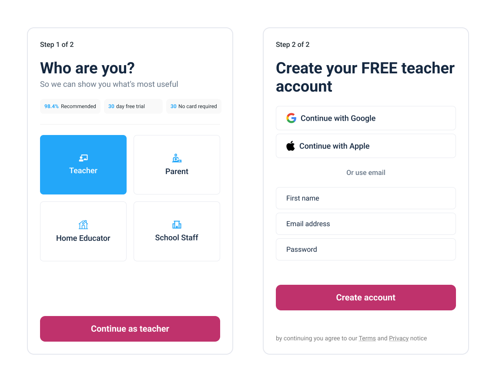

21 May 2026
Wireframes, prototypes, and decisions
The design phase focused on restructuring Twinkl's top navigation from a flat, mixed-intent list into a clear taxonomy built around how different users actually browse. Low-fidelity wireframing was used to test structural decisions quickly before committing to high-fidelity work.
The redesign replaces a flat, 12-item nav that mixed audience types, age bands, and commercial destinations with a small set of intent-based categories. Each item maps to a single user goal. The split button pattern resolves the longstanding dual-function problem on age items, and the two-panel mega menu lets users navigate by curriculum stage without leaving the nav.
The redesigned nav bar at rest. 12+ mixed items collapsed into five intent-based categories. Disney leads as a visually distinct featured partner; Browse by age and Browse by subject serve teacher resource discovery; Leaders and Parents serve distinct non-teacher audiences; Twinkl Store sits at the far right as an isolated transactional destination.
Intent-based taxonomy
Items are grouped by what users are trying to do, not by product type or audience. Each nav item maps to a single user intent, eliminating the current ambiguity between age bands, audience segments, and commercial links.
Single primary CTA
Join for FREE is the only filled button in the utility bar. Sign In, School Enquiries, and the language selector are grouped as low-emphasis utility links. The trial button is removed from the nav entirely.
Clicking the chevron on Browse by age opens a two-panel mega menu. The left panel lists all curriculum stages; selecting a stage updates the right panel to show stage-specific content columns. A persistent "Browse all" link at the foot of each panel navigates to the full stage landing page.
Split button pattern
The label text navigates to the category landing page on click. The chevron opens the mega menu. No hover dependency, no delay, and no ambiguity. This directly resolves the user testing finding that dual-function hover items caused confusion and missed clicks.
Stage-specific content panels
Each curriculum stage shows a different right panel. EYFS shows Areas of Learning; KS1 and KS2 promote English and Maths as dedicated columns; KS3 and above switch to secondary subject columns. The left panel allows switching stages without closing the menu.
A fully interactive low-fidelity wireframe of the redesigned nav. Use the Viewport controls to toggle between desktop (1080px) and mobile (390px). On desktop, use the State controls to preview the Disney, Browse by age, Browse by subject, and Leaders dropdowns. Select a curriculum stage in the age menu and click Browse all to navigate to that stage's landing page layout.
[Description of the high-fidelity prototype: what it covers, how many rounds of iteration led here, and how it was tested.]

XX seconds
[Stat description. Explain what this measures and how it compares to the baseline.]
X out of X
[Stat description. Explain what this measures and how it compares to the baseline.]
XX% less [metric]
[Stat description. Explain what this measures and how it compares to the baseline.]
Curriculum stages over age bands
The age dropdown uses UK curriculum stages (Early Years, KS1, KS2, KS3, KS4-5) as the primary label, with raw age ranges shown as secondary text. Teachers think in key stages, not ages — using stage labels reduces the cognitive step of translating "my class is 8" into the right category.
Disney as a distinct featured partner
Disney uses a pill with a background and border visually distinct from the resting and hover states of standard nav items. It leads the nav row to signal commercial prominence without polluting the primary taxonomy. Its mega menu shows all 18 franchise titles directly, with no sub-categorisation needed at this level.
Leaders and Parents as named audience hubs
Leaders and Parents are distinct audiences with their own product hubs and editorial positioning. Folding them into a generic "For schools" item loses the brand recognition Twinkl has built. Parents has no dropdown — it is a direct link, consistent with how Twinkl's current nav already treats it.
Browse all as a mega menu escape hatch
Each stage panel includes a full-width "Browse all [stage] resources" link spanning all columns. This gives users who open the menu via the chevron a clear route to the stage landing page, without requiring them to close the menu and click the label text separately.